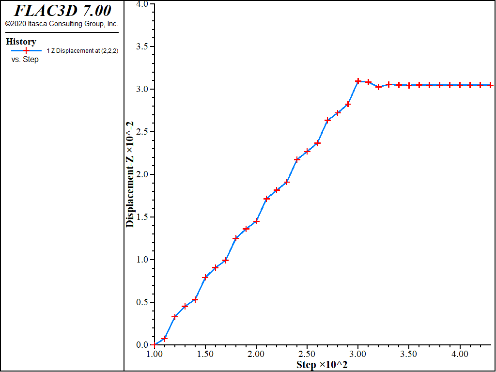

单网格单元膨胀试验
注意
要在 FLAC3D 中查看此项目，请使用菜单命令 。 选择“ConstitutiveModels/SingleZoneSwell”并选择“SingleZoneSwell.f3dprj”以加载。 该项目的主数据文件见本示例末尾（main data file）。
在本示例中，为检验 膨胀模型（swell model），生成了一个 2 m x 2 m 的单网格单元，并赋予以下弹性材料特性：密度 = 1000 kg/m3；体积模量 = 100 MPa；剪切模量 = 30 MPa。在侧向和底部边界施加滚动边界条件后，模型在重力荷载（g = 10 m/s2）下固结。此时，网格单元高度中点处的竖向应力 \(\sigma_{z'z'}\) 等于 -10 kPa。下一步，重置模型中的位移和速度；材料模型由弹性切换为膨胀模型，其刚度和强度（黏聚力和抗拉强度）较高。与对数函数相关的膨胀特性列于 表 1（Table 1）。
| 参数 | 值 |
|---|---|
| density | 1000 |
| 重力（\(m/s^2\)） | 10 |
| \(K\) (Pa) | 1e8 |
| \(G\) (Pa) | 3e7 |
| \(\phi\) (deg) | 0 |
| \(c\) | 1e10 |
| \(\sigma^t\) | 1e10 |
| \((n_x, n_y, n_z)\) | (0,0,1) |
| \(p_a\) (Pa) | 1e5 |
| \(a_1\) | 1.5335 |
| \(c_1\) | -0.0187 |
| \(N_s\) | 200 |
使用上述参数、100.0 kPa 的大气压力以及对数应变函数（膨胀标志（flag-swell） = 1），由对数函数得到的竖向膨胀应变为 0.01523。因此，根据这些解析计算，网格单元向上膨胀 0.03046 m。数值模拟使用下文提供的数据文件进行。特性 \(N_s\) 设为 200，这意味着膨胀应力将在接下来的 200 步内引入网格单元。在计算 200 步使模型达到平衡后，使用 执行计算时步命令（model step） 和 求解模型（model solve） 命令。执行该数据文件报告顶面膨胀 0.03046 m，与解析预测完全一致。
网格单元顶部的竖向位移时程绘于 图 1（Figure 1）。


图 1：网格单元顶部的竖向位移与步数的关系。
数据文件
SingleZoneSwell.dat
; 单网格单元膨胀试验
model new
model large-strain off
model title "Single Zone test - Swell Model"
model gravity (0,0,-10)
;
zone create brick size 1 1 1 edge 2
zone face skin
zone cmodel assign elastic
zone property density 1000 bulk 1e8 shear 3e7
zone face apply velocity-normal 0 range group 'East' or 'West'
zone face apply velocity-normal 0 range group 'North' or 'South'
zone face apply velocity (0,0,0) range group 'Bottom'
model solve ratio-local 1e-5
;
zone gridpoint initialize displacement (0,0,0)
;
zone cmodel assign swell
zone property density 1000 bulk 1e8 shear 3e7 cohesion 1e10 tension 1e10
zone property normal (0,0,1) constant-a-1 1.5335 constant-c-1 -0.0187 ...
pressure-reference 1e5 number-start 200
history interval 10
zone history displacement-z position (2,2,2)
model step 200
model solve ratio-local 1e-5
⇐ Oedometer Test with Plastic-Hardening Model | Single Zone Loading-Unloading Test with MohrT Model ⇒
| 这些内容对您有帮助吗？… | FLAC3D © 2019, Itasca | 原文更新于 2020 年 10 月 8 日 |